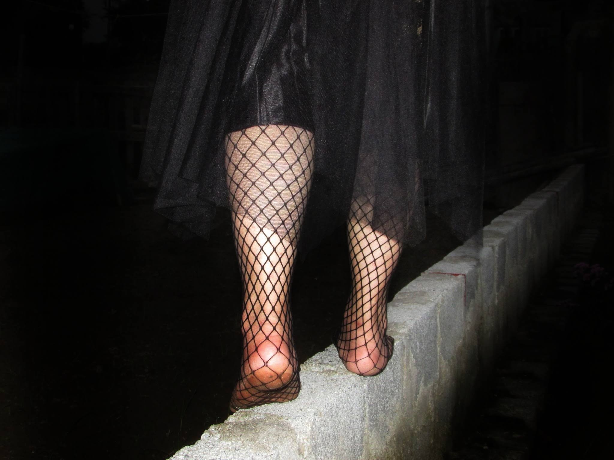
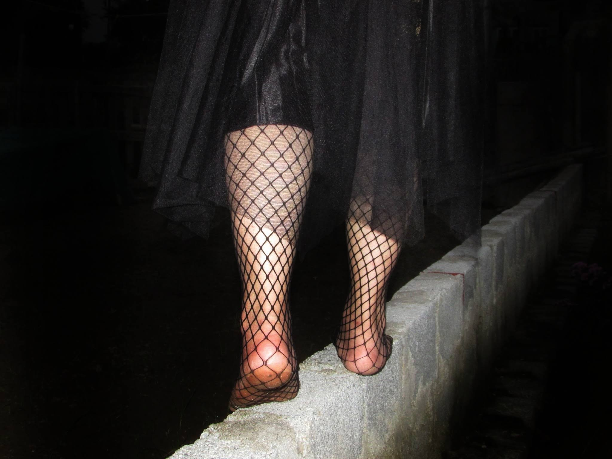

call me 'hailey'. i am a high schooler. most of the time i listen to music, read books and binge-watch movies (manga and anime included).
so far, i have not planned on doing anything specifically on this website. so at the moment let's call it a blog of mine, where i upload information about some of my stuff.
 



Marco the Phoenix is the former 1st division commander of the Whitebeard Pirates. Once starting out as an apprentice on the crew, he had come to be Whitebeard's closest confidante and right-hand man.
Watching them dance around each other, I became aware of the shape of my own tears, swept along by the emotional waves of Del Toro’s sparkling drama, succumbing to its seductively melancholy song of the sea.
phone: +84 9037834**
gmail: levuhaiyen2005@gmail.com
social: